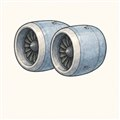

第2巻 だい9わ（さいしゅうわ）── 実機の章じっさいのエンジンで、答え合わせ
最終話は、第1巻と同じく実物での答え合わせです。しかも今回は最高の教材がある——「同じ機体に、2種類のエンジン」という自然実験が2組も飛んでいるのです。ナローボディのA320neoはLEAP-1A（CFM＝GEとサフランの合弁）とPW1100G（P&WのGTF）を、ワイドボディの787はGEnx（GE）とTrent 1000（ロールス・ロイス）を選べる。同じ翼の下で、別の設計思想が毎日競争しています。まずは4基の「顔の大きさ」から。
| LEAP-1A | PW1100G | GEnx-1B | Trent 1000 | |
|---|---|---|---|---|
| 機体 | A320neo | A320neo | 787 | 787 |
| ファン直径 | 198 cm | 206 cm | 282 cm | 285 cm |
| バイパス比 | 11 | 12.5 | 9.3 | 10超 |
| 回転数の答え | 2軸・直結 | ギア 3.06:1 | 2軸・直結 | 3軸 |
そして卒業試験です。章番号をタップすると、その章の言葉でこの4基を読み解きます。8話ぶんの言葉が、実機のどこかに必ずつながっていることを確かめてください。
よりみち直結 vs ギア — ナローボディの対決
同じA320neoの翼の下で、LEAPは直結のまま材料（複合材ファン・高温タービン）と空力で燃費を絞り出し、PW1100Gはギアを入れてファンをゆっくり・タービンを速く回します。ギア側の代償は歯車の重さ・発熱・実績づくり、直結側の代償はタービン段数と回転数の妥協。営業成績はほぼ互角の拮抗が続いていて、物理は一つでも最適解は一つではないことの生きた証拠です。第1巻09話のH3とFalcon 9——「同じ式を見て、別の答えを出したふたつのチーム」——と同じ光景が、翼の下でも起きています。
よりみち2軸 vs 3軸 — ワイドボディの対決
787の2基も思想がきれいに割れます。GEnxは2軸＋GE90譲りの複合材ファンで部品点数と実績を取り、Trent 1000はRR伝統の3軸——低圧・中圧・高圧を別々の軸で回して、それぞれを最適回転数に近づけます。気づいたでしょうか、3軸もギアも「回転数のジレンマ」への答えだということ。軸を増やすか、歯車で割るか、直結で我慢して他で稼ぐか。第4話の一つの問いに、業界は3通りの答えを並走させているのです。
 流体屋のためのノート — 第2巻の地図
流体屋のためのノート — 第2巻の地図
第2巻を流体力学の地図に重ねて締めくくります。ポテンシャル流と渦は翼と翼端渦（01・02話）に、圧縮性流れは遷音速の翼とファン（03・08話）に、ターボ機械は圧縮機とタービン（06・07話）に、燃焼と伝熱は火の部屋（07話）に、空力音響は8乗則（08話）に、流体構造連成はフラッターとバードストライク（05・08話）に住んでいました。そしてエンジンの選定は、熱力学・構造・整備性・事業リスクの連立方程式——数字の裏に必ず「何を恐れ、何に賭けたか」という設計思想が透けています。ロケットの現場に立つとき、この2冊ぶんの言葉があなたの道具箱にありますように。
{kind=link}
第2巻 飛行機編 ── かんけつ
うちゅうのエンジンと、そらのエンジン。
ふたつの巻は、どちらも「投げて、すすむ」の話でした。
読んでくれてありがとう。つづきは、あなたの現場で ✈
・Wikipedia "CFM International LEAP"・"Pratt & Whitney PW1000G"・"General Electric GEnx"・"Rolls-Royce Trent 1000"（各諸元）
・PW1100G-JM 減速比3.0625:1: NZ CAA Type Acceptance Report
・G. P. Sutton ならぬ空の定番: N. Cumpsty, Jet Propulsion